<div class="sidenav" *ngIf="_opened">
  <ul style="list-style: none;">
    <li style="float: right; padding-right: 20px;font-size: 20px;color: white; cursor: pointer;" (click)="_toggleSidebar()"    >
      x
    </li>
    <br />
    <li>
      <a href="index.html">Home</a>
    </li>
    <li>
      <a
        target="_blank"
        href="http://www.nyshcr.org/"
        (click)="_toggleSidebar()"
        >HCR Website</a
      >
    </li>
  </ul>
</div>
<div id="main-wrapper">
  <header class="topbar">
    <nav class="navbar top-navbar navbar-expand-md navbar-light">
      <div class="d-flex justify-content-between align-items-center w-100">
        <div class="d-flex align-items-center">
          <div class="p-05 d-inline">
            <!-- &nbsp;&nbsp;&nbsp;&nbsp;
            
            &nbsp;&nbsp;&nbsp;&nbsp;&nbsp;&nbsp;          -->
            <a class="navbar-brand" href="index.html">
              
            </a>
          </div>
          <div class="font-medium text-white d-inline" style="opacity: 0.9;">
            <div style="line-height: 1em;">
              <span class="font-20">A</span>UTOMATED WAITING LIST
            </div>
            <div style="line-height: 1em;">
              <span class="font-14">Public Access Functions</span>
            </div>
          </div>
        </div>
      </div>
    </nav>
  </header>  
    <div role="main">
    <div class="page-wrapper">
      <div class="container-fluid">
        <!-- ============================================================== -->
        <!-- Bread crumb and right sidebar toggle -->
        <!-- ============================================================== -->
       
        <div>
          <div class="page-titles">
            <div class="align-self-center breadCrumbNav">
              <ol class="breadcrumb">
                <li class="breadcrumb-item" *ngFor="let breadcrumb of breadcrumbs; let i = index">
                  <a [routerLink]="[breadcrumb.url]" class="dl" [innerHTML]="breadcrumb.label">                    
                  </a>
                  <i *ngIf="i < breadcrumbs.length - 1" class="fas fa-angle-right m-l-10"></i>
                </li>
              </ol>
            </div>
          </div>
           <app-router-overlay-spinner *ngIf="isRouterOverlaySpinnerVisible"></app-router-overlay-spinner>
           <app-http-overlay-spinner *ngIf="isHttpOverlaySpinnerVisible"></app-http-overlay-spinner>
          <router-outlet style="padding-top: 50px;"></router-outlet>
        </div>
      </div>
    </div>
  </div>
</div>
